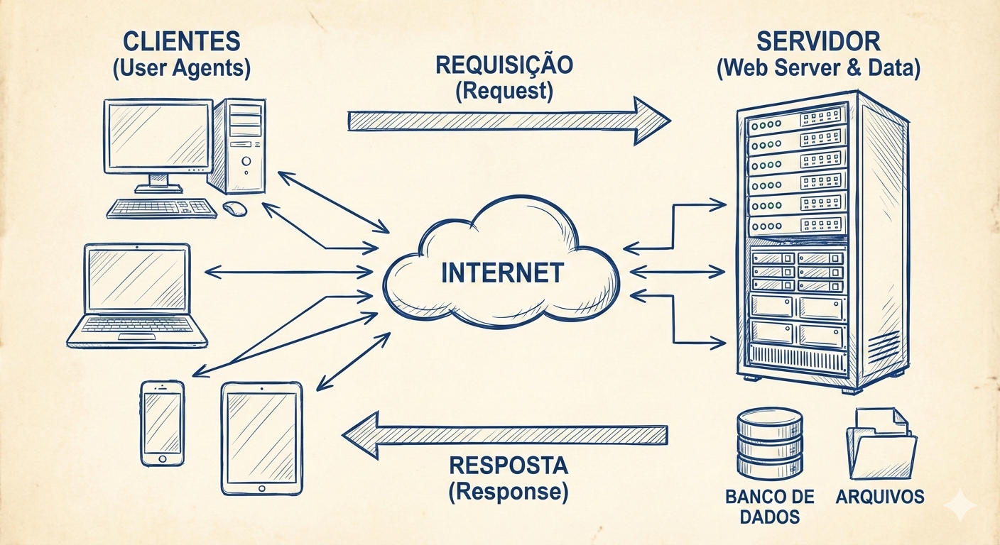

Capítulo 1 — Introdução à Web e Ferramentas¶
1.1 — O que é a Web e como ela funciona¶
Vídeo:O que é e como funciona a internet
A Web é uma das maiores invenções tecnológicas da história humana. Ela conecta pessoas, empresas, governos, dispositivos e sistemas em escala global. Para uma pessoa desenvolvedora, compreender como a Web funciona por dentro não é apenas útil — é essencial. Sem esse entendimento, o desenvolvimento se torna limitado, superficial e dependente de “receitas prontas”. Com esse entendimento, o desenvolvedor ganha autonomia, capacidade de diagnóstico, visão arquitetural e domínio técnico.
A World Wide Web (WWW), frequentemente confundida no senso comum com a própria Internet, constitui, na realidade, um vasto sistema de informações globais que opera como uma camada de abstração de serviço sobre a infraestrutura física de redes. Enquanto a Internet refere-se estritamente à interconexão física global de computadores (hardware, cabos, roteadores) e aos protocolos de transporte de dados de baixo nível (como o TCP/IP), a Web é fundamentada em um conceito de hipermídia distribuída. Neste ecossistema digital, documentos e recursos — sejam eles textos, imagens ou aplicações — são identificados de forma única através de URIs (Uniform Resource Identifiers) e interconectados por meio de hiperlinks, criando uma "teia" complexa e não linear de informações navegáveis que transcendem as fronteiras geográficas dos servidores onde estão hospedados.
Do ponto de vista operacional, o funcionamento da Web baseia-se na arquitetura cliente-servidor, regida majoritariamente pelo protocolo de aplicação HTTP (Hypertext Transfer Protocol). O ciclo de vida de uma interação na Web inicia-se quando um "agente de usuário" (o cliente, tipicamente um navegador), submete uma requisição a um servidor remoto solicitando um recurso específico; este servidor processa o pedido e retorna uma resposta contendo o conteúdo solicitado — geralmente estruturado semanticamente em HTML e estilizado visualmente via CSS. O navegador, então, interpreta esses códigos recebidos para renderizar a interface gráfica final para o usuário, ocultando toda a complexidade da troca de dados subjacente.
Por que entender a arquitetura da Web é importante para uma pessoa desenvolvedora?¶
A Web é construída sobre uma série de camadas, protocolos e padrões que trabalham juntos para permitir que páginas, aplicações e serviços funcionem. Quando você entende essa arquitetura:
- consegue diagnosticar erros (404, 500, DNS, CORS, cache, etc.);
- compreende como otimizar desempenho (cache, compressão, CDN);
- entende como garantir segurança (HTTPS, certificados, cookies, headers);
- desenvolve aplicações mais robustas, escaláveis e acessíveis;
- consegue dialogar com equipes de backend, infraestrutura e segurança.
Em outras palavras: quem domina a arquitetura da Web domina o desenvolvimento moderno.
📜 Breve Histórico da Web¶
A gênese da World Wide Web remonta a março de 1989, nas instalações do CERN (Organização Europeia para a Pesquisa Nuclear), próximo a Genebra. Foi neste cenário que o cientista da computação britânico Sir Tim Berners-Lee redigiu a proposta inicial para um sistema de gestão de informações baseado em hipertexto, visando resolver a dificuldade de compartilhamento de dados entre cientistas de diferentes universidades. Em 1990, utilizando um computador NeXT, Berners-Lee desenvolveu as pedras angulares da Web: a linguagem HTML, o protocolo HTTP e o primeiro navegador (chamado WorldWideWeb). A materialização deste projeto ocorreu quando o primeiro website da história foi publicado, servindo como uma página explicativa sobre o próprio projeto. Em 1993, o CERN colocou o software da Web em domínio público, catalisando a explosão da Internet comercial. Quando criada, a web definia três tecnologias fundamentais: - HTML (HyperText Markup Language) — linguagem de marcação para documentos;
- HTTP (HyperText Transfer Protocol) — protocolo de comunicação;
- URL (Uniform Resource Locator) — identificador de recursos na Web. Essas três tecnologias continuam sendo a base da Web moderna.Com o tempo, novas tecnologias surgiram: - CSS (1996) — estilo e layout;
- JavaScript (1995) — interatividade;
- AJAX (2005) — páginas dinâmicas sem recarregar;
- APIs REST (anos 2000) — comunicação entre sistemas;
- HTML5 (2014) — multimídia, canvas, storage;
- WebAssembly (2017) — alto desempenho no navegador.Referência: CERN - The birth of the Web
1.1.1 — Cliente, Servidor e Navegador¶
A arquitetura da Web é fundamentada em um modelo de distribuição de tarefas conhecido como Cliente-Servidor (ver Figura Cliente-Servidor). Para compreender o funcionamento da rede em um nível de engenharia de software, é imperativo dissociar os papéis funcionais de cada componente, entendendo que a comunicação entre eles é estritamente protocolada.

O Cliente (Client)¶
No contexto técnico, o cliente é a entidade ativa que inicia a comunicação. Ele não se define pelo hardware (o computador ou smartphone), mas sim pelo software que submete uma requisição de serviço. Na terminologia do protocolo HTTP, o cliente é frequentemente referido como User Agent (Agente de Usuário). Sua função primária é formatar mensagens de solicitação (Requests) seguindo padrões definidos — especificando método, cabeçalhos e corpo — e enviá-las através da rede para um endereço específico. Embora o navegador seja o exemplo mais comum, scripts de automação (como crawlers ou bots), aplicações móveis e interfaces de linha de comando (como cURL) também atuam como clientes.
O Servidor (Server)¶
O termo servidor possui uma dualidade semântica na informática. Fisicamente, refere-se ao hardware: computadores de alto desempenho, otimizados para operar ininterruptamente (24/7), equipados com redundância de armazenamento (RAID) e conexão de banda larga de alta capacidade. Logicamente, e mais importante para o desenvolvimento web, refere-se ao software servidor (como Apache, Nginx ou IIS). Este software atua como um processo daemon (processo de segundo plano) que "escuta" (listening) portas específicas da rede — tradicionalmente a porta 80 para HTTP e 443 para HTTPS. Ao receber uma requisição do cliente, o software servidor processa a lógica necessária, acessa bancos de dados se preciso, e devolve o recurso ou uma mensagem de erro.
O Navegador (Browser)¶
O navegador é uma implementação específica de um cliente HTTP, projetado para interação humana. Sua complexidade técnica reside no Motor de Renderização (Rendering Engine), um componente de software responsável por receber o fluxo de dados brutos do servidor (texto HTML, regras CSS, scripts JS) e transformá-los em uma representação visual interativa. O navegador compila esses dados na memória do dispositivo construindo a DOM (Document Object Model), uma árvore estrutural de objetos que o usuário pode visualizar e manipular. Exemplos de motores de renderização incluem o Blink (usado no Chrome e Edge), Gecko (Firefox) e WebKit (Safari).
1.1.2 — Requisições e Respostas (HTTP)¶
O protocolo HTTP (Hypertext Transfer Protocol) é o alicerce da comunicação entre clientes e servidores na Web. Embora muitas vezes invisível ao usuário final, ele é o mecanismo que possibilita a transferência de documentos, imagens, scripts, dados estruturados e praticamente qualquer tipo de recurso digital. Para uma pessoa desenvolvedora, compreender o funcionamento do HTTP não é apenas desejável — é indispensável. Sem esse entendimento, torna‑se impossível diagnosticar problemas de rede, otimizar desempenho, implementar segurança ou construir APIs robustas.
HTTP é um protocolo baseado em texto, sem estado (stateless) e orientado a requisições. Isso significa que cada interação entre cliente e servidor é independente, e o servidor não mantém memória das requisições anteriores, a menos que mecanismos adicionais sejam utilizados (cookies, tokens, sessões, etc.). Essa característica, embora simples, é fundamental para a escalabilidade da Web moderna. Cada troca de dados é tratada como uma transação independente e isolada, composta invariavelmente por dois elementos estruturais: uma Requisição (Request) enviada pelo cliente e uma Resposta (Response) devolvida pelo servidor.
A Estrutura de uma Requisição HTTP¶
Quando o navegador precisa obter um recurso — seja uma página HTML, um arquivo CSS, um script JavaScript ou uma imagem — ele envia uma requisição HTTP ao servidor. Essa requisição é composta por três partes principais:
1. Linha de requisição (Request Line)
Contém:
- Método HTTP (GET, POST, PUT, DELETE, etc.)
- Caminho do recurso
- Versão do protocolo
Exemplo:
GET /produtos HTTP/1.1
2. Cabeçalhos (Headers)
Os cabeçalhos fornecem metadados sobre a requisição, como:
- tipo de conteúdo aceito (
Accept) - idioma preferido (
Accept-Language) - informações do navegador (
User-Agent) - cookies
- autenticação
- cache
Exemplo:
Host: www.exemplo.com
User-Agent: Mozilla/5.0
Accept: text/html
3. Corpo da requisição (Body)
Nem toda requisição possui corpo.
Métodos como GET não enviam corpo, enquanto POST e PUT frequentemente enviam dados (formulários, JSON, arquivos).
A Estrutura de uma Resposta HTTP¶
Após processar a requisição, o servidor devolve uma resposta HTTP, composta por:
1. Linha de status (Status Line)
Inclui:
- versão do protocolo
- código de status
- mensagem textual
Exemplo:
HTTP/1.1 200 OK
2. Cabeçalhos de resposta
Informam:
- tipo de conteúdo (
Content-Type) - tamanho (
Content-Length) - políticas de cache (
Cache-Control) - cookies (
Set-Cookie) - segurança (
Strict-Transport-Security,X-Frame-Options)
3. Corpo da resposta
Contém o recurso solicitado: HTML, JSON, imagem, vídeo, etc.
Códigos de Status HTTP¶
Os códigos de status são fundamentais para diagnóstico e controle de fluxo. Eles são divididos em classes:
| Classe | Significado | Exemplos |
|---|---|---|
| 1xx | Informacional | 100 Continue |
| 2xx | Sucesso | 200 OK, 201 Created |
| 3xx | Redirecionamento | 301 Moved Permanently, 302 Found |
| 4xx | Erro do cliente | 400 Bad Request, 404 Not Found |
| 5xx | Erro do servidor | 500 Internal Server Error, 503 Service Unavailable |
Para desenvolvedores, compreender essas classes é essencial para depuração (localizar e corrigir erros ou bugs no software) e para a construção de APIs.
HTTP como Protocolo Stateless¶
A característica stateless significa que cada requisição é independente.
Isso traz vantagens:
- escalabilidade;
- simplicidade;
- paralelismo.
Mas também traz desafios:
- autenticação precisa ser reenviada;
- estado da aplicação deve ser mantido no cliente ou em mecanismos externos;
- sessões precisam de cookies ou tokens.
Essa limitação levou ao surgimento de tecnologias como:
- JWT (JSON Web Tokens)
- Cookies de sessão
- LocalStorage / SessionStorage
- APIs RESTful com autenticação stateless
📜 Evolução do HTTP¶
O HTTP passou por várias versões:
HTTP/1.1 (1997)
- Conexões persistentes
- Cabeçalhos mais ricos
- Amplamente utilizado até hojeHTTP/2 (2015)
- Multiplexação
- Compressão de cabeçalhos
- Server Push
- Melhor desempenhoHTTP/3 (2022)
- Baseado em QUIC (UDP)
- Redução de latência
- Melhor performance em redes instáveisA Web moderna está migrando gradualmente para HTTP/3, especialmente em serviços de grande escala (Google, Cloudflare, Meta).
1.1.3 — Endereçamento e Infraestrutura¶
Para que o ciclo de Requisição e Resposta (HTTP) ocorra com êxito, é necessário transpor uma barreira fundamental de comunicação: a localização exata do servidor na vasta topologia da rede global. A infraestrutura da Internet opera sobre um sistema numérico rigoroso, invisível ao usuário comum, mas essencial para o roteamento de dados: o Endereço IP (Internet Protocol).
Cada dispositivo conectado à rede, seja ele um servidor de alto desempenho ou um smartphone, recebe um identificador numérico único, análogo a uma coordenada geográfica ou um número telefônico.
Atualmente, coexistem dois padrões principais: o IPv4 (composto por quatro octetos, ex: 192.168.1.1) e o IPv6 (uma sequência hexadecimal mais longa, desenvolvida para suprir a escassez de endereços do padrão anterior).
É através destes endereços que os roteadores e switches sabem exatamente para onde direcionar os pacotes de dados.
No entanto, a memorização de sequências numéricas complexas é inviável para a cognição humana. Para solucionar este problema de usabilidade, foi implementada uma camada de abstração hierárquica e distribuída denominada DNS (Domain Name System). O DNS atua como uma lista telefônica dinâmica e descentralizada da Internet.
Quando um usuário digita um domínio mnemônico (como www.exemplo.com.br) na barra de endereços, o navegador inicia um processo denominado Resolução de Nomes. O sistema consulta servidores DNS recursivos e autoritativos em uma cadeia hierárquica até encontrar o Endereço IP correspondente àquele domínio. Somente após obter essa "tradução" do nome para o número IP é que o navegador consegue estabelecer a conexão TCP/IP real com o servidor e enviar a requisição HTTP. Todo esse processo complexo ocorre em milissegundos, tornando a experiência de navegação fluida e transparente.
O que acontece quando você digita uma URL no navegador?
Imagine que o usuário digita:
https://www.exemplo.com/produtos
-
Verificação do Cache Local
Antes de ir à web, o navegador tenta economizar tempo e banda verificando se já possui uma cópia recente do recurso solicitado.
Ele consulta cabeçalhos como:
- Cache-Control
- Expires
- ETag
Se o navegador encontrar uma versão válida no cache, ele não precisa acessar o servidor. Se não encontrar, ele segue para a próxima etapa.
-
Resolução de nomes (DNS)
O navegador precisa transformar o nome do domínio:
www.exemplo.comEm um endereço IP, como:
- IPv4 →
192.0.2.1 - IPv6 →
2001:db8::1
Essa conversão é feita pelo DNS (Domain Name System).
Como funciona o DNS?
- O navegador pergunta ao SO: “Você sabe o IP de www.exemplo.com?”
- Se o sistema não souber, consulta o servidor DNS configurado (provedor, Google, etc).
- O servidor DNS segue a cadeia hierárquica (Root → TLD → Authoritative).
- O servidor autoritativo responde com o IP correto.
- O navegador armazena a resposta (TTL).
DNS usa UDP ou TCP?
- Normalmente UDP porta 53 (rápido e leve).
- Em casos específicos, TCP (respostas grandes, DNSSEC).
- IPv4 →
-
Protocolo IP e suas versões
O endereço IP identifica dispositivos na rede.
IPv4
- 32 bits
- ~4 bilhões de endereços
- Exemplo:
192.168.0.1
IPv6
- 128 bits
- Quantidade praticamente infinita
- Exemplo:
2001:0db8:85a3::8a2e...
A Web moderna funciona com ambos, mas o IPv6 está crescendo rapidamente.
-
Estrutura da URL
Uma URL possui três partes principais:
https://www.exemplo.com/produtos- 1. Protocolo: Define a comunicação (`http://` ou `https://`).
- 2. Domínio: Nome registrado que aponta para um servidor (`www.exemplo.com`).
- 3. Caminho: Indica o recurso solicitado (`/produtos`).
-
Cliente envia requisição ao servidor
Com o IP em mãos, o navegador abre uma conexão (TCP ou QUIC) e envia a requisição:
GET /produtos HTTP/1.1 Host: www.exemplo.com -
Servidor responde
O servidor processa a requisição e devolve:
- Código de status (200, 404, 500…)
- Cabeçalhos
- Corpo da resposta (HTML, JSON, imagem, etc.)
-
Navegador renderiza a página
O processo final de renderização:
- Lê o HTML.
- Baixa recursos externos (CSS, JS, Imagens).
- Monta a árvore DOM.
- Aplica estilos e executa scripts.
- Exibe a página ao usuário.
Atividade de Revisão — Seção 1.1¶
1. Qual é a diferença fundamental entre a Internet e a World Wide Web (WWW)?
2. No contexto de uma requisição HTTP, o que indica um Código de Status da classe 4xx (como o 404)?
3. Antes de enviar uma requisição HTTP, o navegador precisa traduzir o nome do domínio (ex: www.site.com) em um endereço IP. Qual sistema é responsável por isso?
1.2 — Ferramentas Essenciais para Desenvolvimento Web¶
O desenvolvimento Web moderno exige mais do que apenas conhecer linguagens como HTML, CSS e JavaScript. Ele demanda um conjunto de ferramentas que ampliam a produtividade, facilitam o diagnóstico de problemas, automatizam tarefas e permitem versionar e compartilhar código de forma profissional. Nesta seção, exploraremos as ferramentas fundamentais que todo desenvolvedor Web deve dominar desde o início da sua formação.
1.2.1 — Navegadores e DevTools¶
Os navegadores modernos — como Google Chrome, Mozilla Firefox, Microsoft Edge e Safari — são muito mais do que simples programas para acessar páginas. Eles são verdadeiros ambientes de execução para aplicações Web, contendo motores de renderização, interpretadores JavaScript, mecanismos de segurança e ferramentas avançadas de inspeção.
Motores de Renderização Cada navegador utiliza um motor responsável por interpretar HTML, CSS e JavaScript:
- Blink (Chrome, Edge, Opera)
- Gecko (Firefox)
- WebKit (Safari)
Esses motores convertem código em interfaces visuais, manipulam o DOM (Document Object Model), aplicam estilos e executam scripts. Entender como eles funcionam ajuda a diagnosticar problemas de compatibilidade e desempenho.
DevTools: o laboratório do desenvolvedor
Vídeo: O que é DevTools e como ele pode te ajudar
As Ferramentas de Desenvolvedor (DevTools) são um conjunto de utilitários integrados ao navegador que permitem:
- Inspecionar e editar o DOM em tempo real
- Visualizar e modificar CSS dinamicamente
- Monitorar requisições HTTP
- Analisar desempenho (Performance)
- Depurar JavaScript (Debugging)
- Verificar acessibilidade
- Simular dispositivos móveis
- Monitorar armazenamento local (LocalStorage, Cookies, IndexedDB)
O DevTools é indispensável para qualquer desenvolvedor Web. Ele transforma o navegador em um ambiente de experimentação e diagnóstico, permitindo compreender o comportamento da aplicação em detalhes.
Para abrir o DevTools (Ferramentas do Desenvolvedor) no Chrome ou Firefox, utilize os atalhos universais F12 ou Ctrl+Shift+I (Windows/Linux) e Cmd+Opt+I (Mac). Alternativamente, clique com o botão direito em qualquer página e selecione "Inspecionar" ou acesse o menu de três pontos > "Mais Ferramentas" > "Ferramentas do desenvolvedor

1.2.2 — Editor de Texto - Opção Atual: VS Code¶
Vídeo: Como usar o VS CODE para programar?
O Visual Studio Code (VS Code) é hoje o editor de código mais utilizado no mundo. Ele combina leveza, extensibilidade e uma interface moderna, tornando-se ideal tanto para iniciantes quanto para profissionais.
Por que o VS Code é tão popular?
- Suporte nativo a HTML, CSS e JavaScript
- Terminal integrado
- Git integrado
- Depurador embutido
- Extensões para praticamente qualquer tecnologia
- Autocompletar inteligente (IntelliSense)
- Suporte a snippets e formatação automática
1.2.3 — Git e GitHub (visão inicial)¶
Vídeo: O QUE É GIT E GITHUB? - definição e conceitos importantes
Vídeo: COMO USAR GIT E GITHUB NA PRÁTICA! - desde o primeiro commit até o pull request!
O Git é um sistema de controle de versão distribuído. Ele permite que desenvolvedores acompanhem mudanças no código, revertam erros, criem ramificações (branches) e colaborem em projetos de forma segura e eficiente.
Por que aprender Git desde o início?
- Evita perda de código
- Permite trabalhar em equipe
- Facilita a organização de projetos
- É exigido em praticamente todas as vagas de TI
- É a base do GitHub Classroom, usado na disciplina
GitHub: a plataforma social do código
O GitHub é um serviço baseado em Git que permite:
- Hospedar repositórios
- Criar issues
- Fazer pull requests
- Criar wikis
- Automatizar tarefas com GitHub Actions
- Trabalhar em equipe
- Criar portfólio profissional
1.2.4 — Ambientes online (CodePen, JSFiddle)¶
Vídeo: Por dentro da ferramenta de programação CodePen
Ambientes online como CodePen, JSFiddle, JSBin e StackBlitz permitem testar código HTML, CSS e JavaScript diretamente no navegador, sem necessidade de instalar nada.
Por que usar esses ambientes?
- Ideal para experimentação rápida
- Perfeito para iniciantes
- Facilita o compartilhamento de exemplos
- Permite testar ideias sem criar arquivos locais
- Útil para depurar pequenos trechos de código
Atividades — Seção 1.2¶
- Quiz: Ferramentas e DevTools (link será adicionado)
- GitHub Classroom: Criar repositório inicial e enviar
hello.html(link será adicionado)